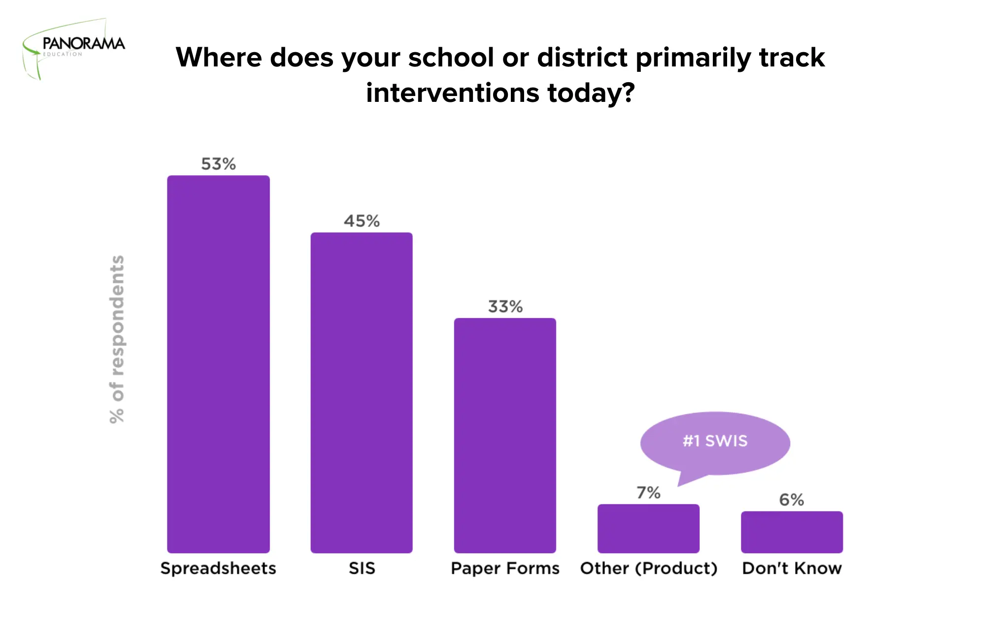

0 to 1 product · Data insights · B2B
$0 to $12M ARR via a New Product
Helping educators better support their students through a data-driven and collaborative product called Student Success.

My role
I led design from discovery to execution

VP Product
Group Product Manager
Product Marketing Manager
Engineering Manager
3 Engineers
Engineering Team
The pilot launched in June 2017 followed by an MVP product later that year, with continued development through 2020.
The Problem
The quiet students slip through the cracks
Counselors, psychologists, and interventionists are responsible for the social-emotional and academic success of a caseload of approximately 300-400 students. However, determining who to prioritize for support on any given day is often a reactive process.
After interviewing dozens of Educators we learned...
- • Educators lacked timely access to essential data, often relying on laborious exports from outdated student information systems.
- • They were concerned that students needing supports were not getting them both social-emotionally and academically.
- • Educators often went off of gut rather than being aligned around a data informed support system and their interventions were more reactive than proactive.
- • Educators couldn't see if another educator was supporting a student which led to some students getting duplicate support or no support at all.
We surveyed educators to understand the competitor landscape
Schools varied in their student support efforts: some held weekly triage meetings, others considered adopting a framework, and some tracked supports in context-lacking spreadsheets.
We went onsite to observe student support triage meetings.
How can we help educators support at-risk students and prepare them for college?
The Product
Introducing Student Success
Early warning system
While competitors could prioritize students across one or two dimensions, Student Success differentiated itself by considering the whole student.
Social-emotional learning
SEL is Panorama's differentiator but until we brought it into Student Success it was only measured at a system level. Now educators could see which students self-reported low and could support them with their social-emotional growth.
Intervention tracking
Once we consolidated all relevant data, educators wanted to create and track group and individual interventions, enabling collaboration and visibility into what helps students.
Student check-ins
Leveraging Panorama's robust survey platform, we developed an MVP allowing educators to initiate and record check-ins directly on students' profiles.
Delightful features
Adding birthday hats to students' profile images not only provided an opportunity for educators to connect with students, but also added a playful and humanizing touch to the product.
Ogden School District
Valeria Lopez (district behavior interventionist) describes how she supported an at-risk student using data in Panorama to build relationships and help this student reach his goal: high school graduation.
The Impact
in 3 years
customers including 2 state-wide contracts
market share achieved
students in the product
students supported in the product
Want to see more?
Get in touch with me to see my in-depth case studies.